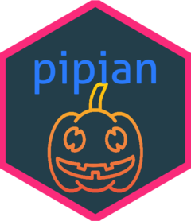

pipian 
Tiny Interface to CaboCha for R
Installation
remotes::install_github("paithiov909/pipian")Usage
Parsing dependency
res <- pipian::CabochaTbl("ふと振り向くと、たくさんの味方がいてたくさんの優しい人間がいることを、わざわざ自分の誕生日が来ないと気付けない自分を奮い立たせながらも、毎日こんな、湖のようななんの引っ掛かりもない、落ちつき倒し、音一つも感じさせない人間でいれる方に憧れを持てたとある25歳の眩しき朝のことでした")
res$tbl
#> # A tibble: 37 x 4
#> id link score morphs
#> <chr> <chr> <chr> <chr>
#> 1 0 1 1.287564 ふと
#> 2 1 36 -2.336376 振り向くと、
#> 3 2 3 1.927252 たくさんの
#> 4 3 4 0.834422 味方が
#> 5 4 8 2.020974 いて
#> 6 5 7 1.913107 たくさんの
#> 7 6 7 1.773527 優しい
#> 8 7 8 2.371958 人間が
#> 9 8 9 3.138138 いる
#> 10 9 13 0.293884 ことを、
#> # ... with 27 more rows
Getting dependency as flatXML
head(pipian::cabochaFlatXML("ふと振り向くと、たくさんの味方がいてたくさんの優しい人間がいることを、わざわざ自分の誕生日が来ないと気付けない自分を奮い立たせながらも、毎日こんな、湖のようななんの引っ掛かりもない、落ちつき倒し、音一つも感じさせない人間でいれる方に憧れを持てたとある25歳の眩しき朝のことでした"))
#> elem. elemid. attr. value. level1 level2 level3 level4
#> 1 sentences 1 <NA> <NA> sentences <NA> <NA> <NA>
#> 2 sentence 2 <NA> <NA> sentences sentence <NA> <NA>
#> 3 chunk 3 <NA> <NA> sentences sentence chunk <NA>
#> 4 chunk 3 id 0 sentences sentence chunk <NA>
#> 5 chunk 3 link 1 sentences sentence chunk <NA>
#> 6 chunk 3 rel D sentences sentence chunk <NA>Converting flatXML into tibble compatible with CabochaR
require(magritrr)
res <- pipian::cabochaFlatXML("ふと振り向くと、たくさんの味方がいてたくさんの優しい人間がいることを、わざわざ自分の誕生日が来ないと気付けない自分を奮い立たせながらも、毎日こんな、湖のようななんの引っ掛かりもない、落ちつき倒し、音一つも感じさせない人間でいれる方に憧れを持てたとある25歳の眩しき朝のことでした") %>%
pipian::CabochaR()
res$morphs[[1]]
#> # A tibble: 78 x 21
#> chunk_idx tok_idx ne_value word POS1 POS2 POS3 POS4 X5StageUse1 X5StageUse2
#> <dbl> <dbl> <chr> <chr> <chr> <chr> <chr> <chr> <chr> <chr>
#> 1 3 0 O ふと 副詞 一般 * * * *
#> 2 5 1 O 振り向く~ 動詞 自立 * * 五段・カ行イ音便~ 基本形
#> 3 5 2 O と 助詞 接続助詞~ * * * *
#> 4 5 3 O 、 記号 読点 * * * *
#> 5 9 4 O たくさん~ 名詞 副詞可能~ * * * *
#> 6 9 5 O の 助詞 連体化~ * * * *
#> 7 12 6 O 味方 名詞 サ変接続~ * * * *
#> 8 12 7 O が 助詞 格助詞~ 一般 * * *
#> 9 15 8 O い 動詞 自立 * * 一段 連用形
#> 10 15 9 O て 助詞 接続助詞~ * * * *
#> # ... with 68 more rows, and 11 more variables: Original <chr>, Yomi1 <chr>,
#> # Yomi2 <chr>, sentence_id <int>, chunk_id1 <dbl>, D1 <dbl>, D2 <dbl>, rel <chr>,
#> # score <dbl>, head <dbl>, func <dbl>
res$as_tibble()
#> # A tibble: 78 x 20
#> sentence_idx chunk_idx D1 D2 rel score head func tok_idx ne_value
#> <int> <dbl> <chr> <chr> <chr> <chr> <chr> <chr> <dbl> <chr>
#> 1 1 3 0 1 D 1.28~ 0 0 0 O
#> 2 1 5 1 36 D -2.3~ 1 2 1 O
#> 3 1 5 1 36 D -2.3~ 1 2 2 O
#> 4 1 5 1 36 D -2.3~ 1 2 3 O
#> 5 1 9 2 3 D 1.92~ 4 5 4 O
#> 6 1 9 2 3 D 1.92~ 4 5 5 O
#> 7 1 12 3 4 D 0.83~ 6 7 6 O
#> 8 1 12 3 4 D 0.83~ 6 7 7 O
#> 9 1 15 4 8 D 2.02~ 8 9 8 O
#> 10 1 15 4 8 D 2.02~ 8 9 9 O
#> # ... with 68 more rows, and 10 more variables: word <chr>, POS1 <chr>,
#> # POS2 <chr>, POS3 <chr>, POS4 <chr>, X5StageUse1 <chr>, X5StageUse2 <chr>,
#> # Original <chr>, Yomi1 <chr>, Yomi2 <chr>License
Copyright (c) 2020 Kato Akiru
Released under the MIT license https://github.com/paithiov909/pipian/blob/master/LICENSE